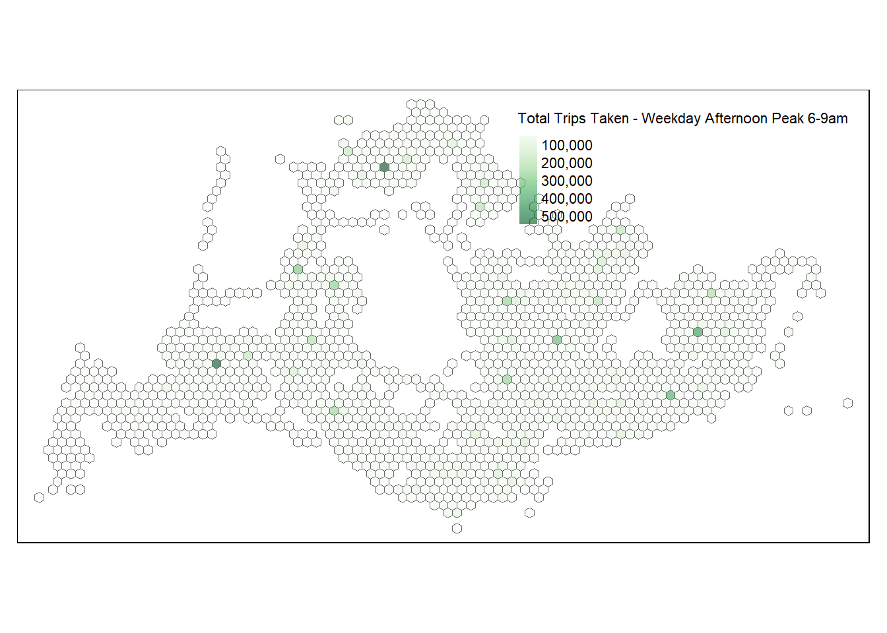
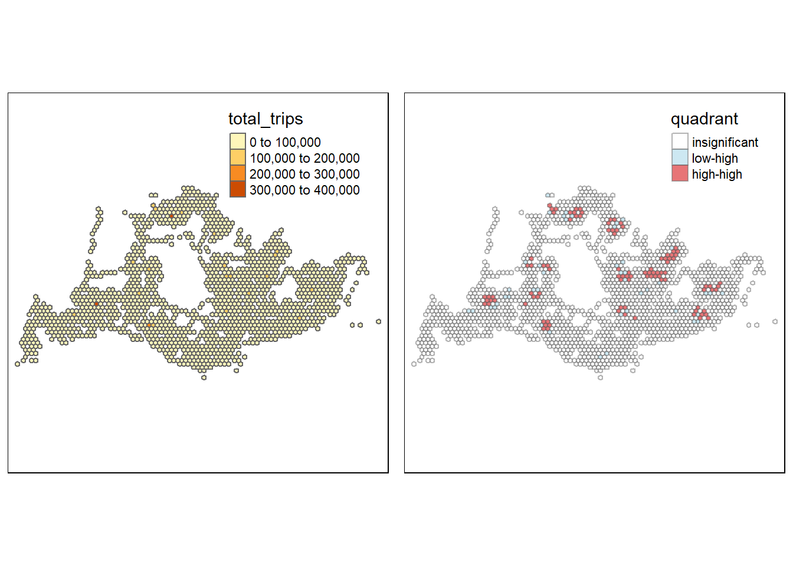

pacman::p_load(tmap,sf,spdep,sfdep,tidyverse,knitr,plotly,zoo,Kendall)Take Home Exercise 1
Getting Started
Preparing the Flow Data
Importing the OD data
Firstly, we will import the Passenger Volume by Origin Destination Bus Stops data set downloaded from LTA DataMall by using read_csv() of readr package.
odbus <- read_csv("data/aspatial/origin_destination_bus_202308.csv")Check odbus tibble data frame that values in OROGIN_PT_CODE and DESTINATION_PT_CODE are in numeric data type.
glimpse(odbus)Rows: 5,709,512
Columns: 7
$ YEAR_MONTH <chr> "2023-08", "2023-08", "2023-08", "2023-08", "2023-…
$ DAY_TYPE <chr> "WEEKDAY", "WEEKENDS/HOLIDAY", "WEEKENDS/HOLIDAY",…
$ TIME_PER_HOUR <dbl> 16, 16, 14, 14, 17, 17, 17, 17, 7, 17, 14, 10, 10,…
$ PT_TYPE <chr> "BUS", "BUS", "BUS", "BUS", "BUS", "BUS", "BUS", "…
$ ORIGIN_PT_CODE <chr> "04168", "04168", "80119", "80119", "44069", "4406…
$ DESTINATION_PT_CODE <chr> "10051", "10051", "90079", "90079", "17229", "1722…
$ TOTAL_TRIPS <dbl> 7, 2, 3, 10, 5, 4, 3, 22, 3, 3, 7, 1, 3, 1, 3, 1, …Origin & Destination Bus Stop Code
odbus$ORIGIN_PT_CODE <-
as.factor(odbus$ORIGIN_PT_CODE)
odbus$DESTINATION_PT_CODE <-
as.factor(odbus$DESTINATION_PT_CODE)Extracting the Study Data
Filter out data that belong to trips that occur on:
“Weekday” and “6-9am” (wdmp)
wdmp <- odbus %>% filter(DAY_TYPE == "WEEKDAY") %>% filter(TIME_PER_HOUR >= 6 & TIME_PER_HOUR <= 9) %>% group_by(ORIGIN_PT_CODE) %>% summarise(TRIPS = sum(TOTAL_TRIPS))“Weekday” and “5-8pm” (wdap)
wdap <- odbus %>% filter(DAY_TYPE == "WEEKDAY") %>% filter(TIME_PER_HOUR >= 17 & TIME_PER_HOUR <= 20) %>% group_by(ORIGIN_PT_CODE) %>% summarise(TRIPS = sum(TOTAL_TRIPS))“Weekends/Holiday” and “11am-2pm” (hmp)
hmp <- odbus %>% filter(DAY_TYPE == "WEEKENDS/HOLIDAY") %>% filter(TIME_PER_HOUR >= 11 & TIME_PER_HOUR <= 14) %>% group_by(ORIGIN_PT_CODE) %>% summarise(TRIPS = sum(TOTAL_TRIPS))“Weekends/Holiday” and “4pm-7pm” (hep)
hep <- odbus %>% filter(DAY_TYPE == "WEEKENDS/HOLIDAY") %>% filter(TIME_PER_HOUR >= 16 & TIME_PER_HOUR <= 19) %>% group_by(ORIGIN_PT_CODE) %>% summarise(TRIPS = sum(TOTAL_TRIPS))
Check resulting data tables
kable(head(wdmp)) | ORIGIN_PT_CODE | TRIPS |
|---|---|
| 01012 | 1973 |
| 01013 | 952 |
| 01019 | 1789 |
| 01029 | 2561 |
| 01039 | 2938 |
| 01059 | 1651 |
kable(head(wdap)) | ORIGIN_PT_CODE | TRIPS |
|---|---|
| 01012 | 8448 |
| 01013 | 7328 |
| 01019 | 3608 |
| 01029 | 9317 |
| 01039 | 12937 |
| 01059 | 2133 |
kable(head(hmp)) | ORIGIN_PT_CODE | TRIPS |
|---|---|
| 01012 | 2273 |
| 01013 | 1697 |
| 01019 | 1511 |
| 01029 | 3272 |
| 01039 | 5424 |
| 01059 | 1062 |
kable(head(hep))| ORIGIN_PT_CODE | TRIPS |
|---|---|
| 01012 | 3208 |
| 01013 | 2796 |
| 01019 | 1623 |
| 01029 | 4244 |
| 01039 | 7403 |
| 01059 | 1190 |
Output saved in rds format for future use
write_rds(wdmp, "data/rds/wdmp.rds")
write_rds(wdap, "data/rds/wdap.rds")
write_rds(hmp, "data/rds/hmp.rds")
write_rds(hep, "data/rds/hep.rds")Import the rds file into R environment
wdmp <- read_rds("data/rds/wdmp.rds")
wdap <- read_rds("data/rds/wdap.rds")
hmp <- read_rds("data/rds/hmp.rds")
hep <- read_rds("data/rds/hep.rds")Working with Geospatial Data
Two geospatial data (shapefile) will be used for this exercise:
BusStop: Provides location of bus stop as at Q4 2022
MPSZ-2019: This data provides the sub-zone boundary of URA Master Plan 2019
Importing geospatial data
busstop <- st_read(dsn = "Data/geospatial",
layer = "BusStop") %>%
st_transform(crs = 3414)Reading layer `BusStop' from data source
`C:\lnealicia\ISSS624\Takehome_ex01\Data\Geospatial' using driver `ESRI Shapefile'
Simple feature collection with 5161 features and 3 fields
Geometry type: POINT
Dimension: XY
Bounding box: xmin: 3970.122 ymin: 26482.1 xmax: 48284.56 ymax: 52983.82
Projected CRS: SVY21mpsz <- st_read(dsn = "data/geospatial",
layer = "MPSZ-2019") %>%
st_transform(crs = 3414)Reading layer `MPSZ-2019' from data source
`C:\lnealicia\ISSS624\Takehome_ex01\Data\Geospatial' using driver `ESRI Shapefile'
Simple feature collection with 332 features and 6 fields
Geometry type: MULTIPOLYGON
Dimension: XY
Bounding box: xmin: 103.6057 ymin: 1.158699 xmax: 104.0885 ymax: 1.470775
Geodetic CRS: WGS 84Check structure of busstop and MPSZ sf tibble data frame
glimpse(busstop)Rows: 5,161
Columns: 4
$ BUS_STOP_N <chr> "22069", "32071", "44331", "96081", "11561", "66191", "2338…
$ BUS_ROOF_N <chr> "B06", "B23", "B01", "B05", "B05", "B03", "B02A", "B02", "B…
$ LOC_DESC <chr> "OPP CEVA LOGISTICS", "AFT TRACK 13", "BLK 239", "GRACE IND…
$ geometry <POINT [m]> POINT (13576.31 32883.65), POINT (13228.59 44206.38),…glimpse(mpsz)Rows: 332
Columns: 7
$ SUBZONE_N <chr> "MARINA EAST", "INSTITUTION HILL", "ROBERTSON QUAY", "JURON…
$ SUBZONE_C <chr> "MESZ01", "RVSZ05", "SRSZ01", "WISZ01", "MUSZ02", "MPSZ05",…
$ PLN_AREA_N <chr> "MARINA EAST", "RIVER VALLEY", "SINGAPORE RIVER", "WESTERN …
$ PLN_AREA_C <chr> "ME", "RV", "SR", "WI", "MU", "MP", "WI", "WI", "SI", "SI",…
$ REGION_N <chr> "CENTRAL REGION", "CENTRAL REGION", "CENTRAL REGION", "WEST…
$ REGION_C <chr> "CR", "CR", "CR", "WR", "CR", "CR", "WR", "WR", "CR", "CR",…
$ geometry <MULTIPOLYGON [m]> MULTIPOLYGON (((33222.98 29..., MULTIPOLYGON (…Geospatial Data Wrangling
Combining Busstop & mpsz
busstop_mpsz <- st_intersection(busstop, mpsz) %>%
select(BUS_STOP_N, SUBZONE_C) %>%
st_drop_geometry()Save output into rds format
write_rds(busstop_mpsz, "data/rds/busstop_mpsz.csv")Hexagon Grid Setup
Drawing the Hexagon Grid
Draw hexagon grid over the mpsz map
area_honeycomb_grid = st_make_grid(mpsz, c(500, 500), what = "polygons", square = FALSE)Convert the hexagon grid to sf (simple features) object and add a new column grid_id (sequential identifier) to it
honeycomb_grid_sf = st_sf(area_honeycomb_grid) %>%
# add grid ID
mutate(grid_id = 1:length(lengths(area_honeycomb_grid)))Determine which bus stops is contained within which hexagon using st_within.
busstop_honeycomb <- st_intersection(honeycomb_grid_sf,busstop) %>%
select(BUS_STOP_N, grid_id) %>%
st_drop_geometry()Save output into rds format
write_rds(busstop_honeycomb, "data/rds/busstop_honeycomb.csv")Check for duplicate records
duplicate <- busstop_honeycomb %>%
group_by_all() %>%
filter(n()>1) %>%
ungroup()Retain unique records only
busstop_honeycomb <- unique(busstop_honeycomb)Only include hexagon grid IDs that have bus stop numbers
busstop_honeycomb <- busstop_honeycomb %>%
filter(!is.na(grid_id) & grid_id > 0)Assign Each Bus Stop to a Grid ID
For all time periods, assign bus stops to a hexagon grid id. All NULL and 0 values are removed.
wdmp_gridid <- left_join(busstop_honeycomb, wdmp,
by = c("BUS_STOP_N" = "ORIGIN_PT_CODE"))
wdmp_gridid <- wdmp_gridid %>%
filter(!is.na(TRIPS) & TRIPS > 0)
wdap_gridid <- left_join(busstop_honeycomb, wdap,
by = c("BUS_STOP_N" = "ORIGIN_PT_CODE"))
wdap_gridid <- wdap_gridid %>%
filter(!is.na(TRIPS) & TRIPS > 0)
hmp_gridid <- left_join(busstop_honeycomb, hmp,
by = c("BUS_STOP_N" = "ORIGIN_PT_CODE"))
hmp_gridid <- hmp_gridid %>%
filter(!is.na(TRIPS) & TRIPS > 0)
hep_gridid <- left_join(busstop_honeycomb, hep,
by = c("BUS_STOP_N" = "ORIGIN_PT_CODE"))
hep_gridid <- hep_gridid %>%
filter(!is.na(TRIPS) & TRIPS > 0)Note: Grid id 2955 and 3036 contains bus stops that are not within Singapore (i.e. Malaysia). These are left as they could provide insights to traffic between the Singapore & Malaysia land border.
Choropleth Visualisation
Weekday Morning Peak 6am-9am
Sum up the trips per hexagon
total_trips_by_grid_wdmp <- wdmp_gridid %>%
group_by(grid_id) %>%
summarise(total_trips = sum(TRIPS, na.rm = TRUE))Merge geospatial data
total_trips_by_grid_wdmp <- total_trips_by_grid_wdmp %>%
left_join(honeycomb_grid_sf, by = c("grid_id" = "grid_id"))
total_trips_by_grid_wdmp_sf <- st_sf(total_trips_by_grid_wdmp)Summary Statistics (Hexagon)
summary(wdmp$TRIPS) Min. 1st Qu. Median Mean 3rd Qu. Max.
1.0 469.2 2183.5 5267.1 6261.2 365871.0 Total Trips in the time slot
sum(wdmp$TRIPS)[1] 26430413Plot the Choropleth map
tmap_mode("plot")
tm_shape(total_trips_by_grid_wdmp_sf) +
tm_fill(
col = "total_trips",
palette = "Greens",
style = "cont",
title = "Total Trips Taken - Weekday Morning Peak 6-9am",
id = "grid_id",
showNA = FALSE,
alpha = 0.6,
popup.vars = c(
"Number of trips: " = "total_trips"
),
popup.format = list(
total_trips = list(format = "f", digits = 0)
)
) +
tm_borders(col = "grey40", lwd = 0.4)
Description of Spatial Patterns
Weekday Morning Peak 6am-9am
This timeslot has a total of 26,430,413 trips taken. It ranks first by total volume of trips among our time periods of interest. The median number of trips per hexagon is 2184.
Hexagons with greater number of trips are located near:
Residential areas e.g. Tampines, Ang Mo Kio
Public transport hubs e.g. Bus Interchange, MRT Interchange e.g. Toa Payoh Interchange, Bedok Interchange
Immigration checkpoint at Woodlands
Weekday Afternoon Peak 5pm-8pm
Sum up the trips per hexagon
total_trips_by_grid_wdap <- wdap_gridid %>%
group_by(grid_id) %>%
summarise(total_trips = sum(TRIPS, na.rm = TRUE))Merge geospatial data
total_trips_by_grid_wdap <- total_trips_by_grid_wdap %>%
left_join(honeycomb_grid_sf, by = c("grid_id" = "grid_id"))
total_trips_by_grid_wdap_sf <- st_sf(total_trips_by_grid_wdap)Summary Statistics (Hexagon)
summary(wdap$TRIPS) Min. 1st Qu. Median Mean 3rd Qu. Max.
1 719 2055 5114 4752 536630 Total Trips in the time slot
sum(wdap$TRIPS)[1] 25748484sum(wdap$TRIPS)[1] 25748484Plot the Choropleth map
tmap_mode("plot")
tm_shape(total_trips_by_grid_wdap_sf) +
tm_fill(
col = "total_trips",
palette = "Greens",
style = "cont",
title = "Total Trips Taken - Weekday Afternoon Peak 6-9am",
id = "grid_id",
showNA = FALSE,
alpha = 0.6,
popup.vars = c(
"Number of trips: " = "total_trips"
),
popup.format = list(
total_trips = list(format = "f", digits = 0)
)
) +
tm_borders(col = "grey40", lwd = 0.4)
Description of Spatial Patterns
Weekday Afternoon Peak 6am-9am
This timeslot has a total of 25,748,484 trips taken. It ranks second by total volume of trips among our time periods of interest. The median number of trips per hexagon is 2055. Over all, the distribution of trips remain similar, but are more concentrated at public transport hubs.
Hexagons with greater number of trips are located near:
Public transport hubs e.g. Bus Interchange, MRT Interchange e.g. Serangoon Interchange, Woodlands Interchange
School clusters e.g. Commonwealth Avenue West
Weekend/Holiday Morning Peak 11am-2pm
Sum up the trips per hexagon
total_trips_by_grid_hmp <- hmp_gridid %>%
group_by(grid_id) %>%
summarise(total_trips = sum(TRIPS, na.rm = TRUE))Merge geospatial data
total_trips_by_grid_hmp <- total_trips_by_grid_hmp %>%
left_join(honeycomb_grid_sf, by = c("grid_id" = "grid_id"))
total_trips_by_grid_hmp_sf <- st_sf(total_trips_by_grid_hmp)Summary Statistics Per Hexagon
summary(hmp$TRIPS) Min. 1st Qu. Median Mean 3rd Qu. Max.
1 186 671 1546 1695 102210 Total Trips in the time slot
sum(hmp$TRIPS)[1] 7738503Plot the Choropleth map
tmap_mode("plot")
tm_shape(total_trips_by_grid_hmp_sf) +
tm_fill(
col = "total_trips",
palette = "Greens",
style = "cont",
title = "Total Trips Taken - Weekend/Holiday Morning Peak 11am-2pm",
id = "grid_id",
showNA = FALSE,
alpha = 0.6,
popup.vars = c(
"Number of trips: " = "total_trips"
),
popup.format = list(
total_trips = list(format = "f", digits = 0)
)
) +
tm_borders(col = "grey40", lwd = 0.4)
Description of Spatial Patterns
Weekend/Holiday Morning Peak 11am-2pm
This timeslot has a total of 7,738,503 trips taken. It ranks third by total volume of trips among our time periods of interest. The median number of trips per hexagon is 671.
Hexagons with greater number of trips are located near:
Public transport hubs e.g. Bus Interchange, MRT Interchange e.g. Choa Chu Kang Interchange, Toa Payoh Interchange
Residential Areas e.g. Bukit Batok Central
Additional Note: Overall drop in volume could be contributed by leisure travels, and foreign students/workers leaving for their home countries.
Weekend/Holiday Evening Peak 4pm-7pm
Sum up the trips per hexagon
total_trips_by_grid_hep <- hep_gridid %>%
group_by(grid_id) %>%
summarise(total_trips = sum(TRIPS, na.rm = TRUE))Merge geospatial data
total_trips_by_grid_hep <- total_trips_by_grid_hep %>%
left_join(honeycomb_grid_sf, by = c("grid_id" = "grid_id"))
total_trips_by_grid_hep_sf <- st_sf(total_trips_by_grid_hep)Summary Statistics (Hexagon)
summary(hep$TRIPS) Min. 1st Qu. Median Mean 3rd Qu. Max.
1 202 631 1549 1475 143443 Total Trips in the time slot
sum(hep$TRIPS)[1] 7721570Plot the Choropleth map
tmap_mode("plot")
tm_shape(total_trips_by_grid_hep_sf) +
tm_fill(
col = "total_trips",
palette = "Greens",
style = "cont",
title = "Total Trips Taken - Weekend/Holiday Evening Peak 4pm-7pm",
id = "grid_id",
showNA = FALSE,
alpha = 0.6,
popup.vars = c(
"Number of trips: " = "total_trips"
),
popup.format = list(
total_trips = list(format = "f", digits = 0)
)
) +
tm_borders(col = "grey40", lwd = 0.4)
Description of Spatial Patterns
Weekend/Holiday Evening Peak 4pm-7pm
This timeslot has a total of 7,721,570 trips taken. It ranks fourth (i.e. last) by total volume of trips among our time periods of interest. The median number of trips per hexagon is 631.
Hexagons with greater number of trips are located near:
Public transport hubs e.g. Bus Interchange, MRT Interchange e.g. Choa Chu Kang Interchange, Serangoon Interchange
These locations also happen to be:
Places of Interest/Shopping Center: e.g. Lot 1 Shopping Center (Choa Chu Kang Interchange), NEX water playground (Serangoon)
Additional Note: It is interesting to see that the Central Business District, as well as industrial areas, while serviced by public transport, are not as highly utilised when compared to other areas e.g. residential area. This could be due to commuters using alternate forms of transport e.g. private cars, taxi, company shuttle bus`
Global Spatial Autocorrelation
Computed to perform spatial complete randomness test for global spatial autocorrelation.
Computing Contiguity Spatial Weights
Use poly2nb() of spdep package to compute contiguity weight matrices for the study area. This function builds a neighbours list based on regions with contiguous boundaries.
Weekday Morning Peak 6am-9am
wm_wdmp <- poly2nb(total_trips_by_grid_wdmp_sf,
queen=TRUE)
summary(wm_wdmp)Neighbour list object:
Number of regions: 1490
Number of nonzero links: 6766
Percentage nonzero weights: 0.304761
Average number of links: 4.54094
12 regions with no links:
1 279 552 591 714 978 1030 1476 1477 1480 1483 1490
21 disjoint connected subgraphs
Link number distribution:
0 1 2 3 4 5 6
12 43 101 183 264 406 481
43 least connected regions:
3 20 21 34 42 69 165 175 185 186 211 258 268 310 432 440 455 468 487 553 656 666 696 697 698 709 738 751 756 783 834 993 1008 1021 1031 1069 1206 1254 1384 1471 1472 1481 1489 with 1 link
481 most connected regions:
12 17 18 24 26 29 51 52 56 59 63 66 71 72 74 75 77 78 81 82 84 85 89 90 95 101 106 110 116 119 122 127 128 131 138 140 144 145 150 151 152 159 160 169 170 171 179 180 181 189 190 191 192 198 199 200 205 206 207 216 228 238 242 243 244 245 249 251 254 261 283 290 292 293 294 296 301 302 303 304 305 308 309 312 313 314 315 316 317 319 325 326 327 328 329 330 331 342 343 344 347 357 358 363 369 370 382 383 393 396 397 404 412 416 417 423 429 430 433 435 436 442 443 444 451 452 456 458 459 464 472 480 482 483 484 496 497 507 508 518 528 537 539 540 541 542 543 546 547 549 555 560 567 568 570 575 583 584 588 593 594 595 598 599 601 602 603 608 612 613 614 617 619 625 626 630 631 637 641 642 643 648 649 651 652 663 664 665 670 672 673 674 681 682 688 692 693 694 701 703 704 705 712 716 717 718 729 730 744 746 748 758 764 765 766 770 773 778 779 780 785 786 791 792 798 804 805 810 811 826 828 829 831 832 833 835 836 840 842 843 846 848 849 850 853 859 860 861 862 863 864 867 868 870 871 874 876 877 878 879 880 883 885 888 889 890 894 895 896 897 898 902 903 905 906 909 910 911 912 913 914 915 920 924 925 927 930 931 932 933 934 935 939 940 941 942 944 945 948 949 955 956 957 958 959 960 970 971 972 973 974 975 981 982 983 985 996 997 1010 1011 1015 1017 1023 1026 1027 1028 1033 1038 1039 1040 1043 1044 1045 1048 1049 1050 1058 1060 1061 1062 1063 1065 1066 1072 1076 1077 1082 1084 1085 1088 1090 1096 1102 1107 1114 1115 1117 1118 1122 1123 1127 1133 1134 1135 1140 1142 1146 1147 1148 1149 1150 1151 1154 1157 1158 1159 1160 1161 1166 1167 1170 1171 1172 1173 1174 1180 1182 1183 1184 1185 1189 1190 1194 1195 1196 1204 1208 1209 1210 1211 1215 1216 1221 1227 1233 1235 1236 1237 1242 1243 1247 1248 1252 1255 1256 1263 1265 1266 1268 1271 1273 1274 1275 1277 1282 1283 1290 1291 1294 1295 1300 1301 1305 1306 1307 1308 1313 1314 1315 1322 1323 1325 1329 1334 1335 1341 1342 1348 1349 1350 1351 1356 1357 1364 1367 1372 1375 1381 1382 1387 1389 1396 1397 1398 1402 1403 1404 1405 1409 1411 1415 1420 1422 1423 1424 1427 1433 1436 1443 1444 1448 with 6 linksNote: The summary report above shows that there are 1490 hexagons considered for Weekday Morning Peak 6am-9am. The most connected hexagon has 6 neighbours. There are 43 hexagons with only 1 neighbour.
Weekday Afternoon Peak 5pm-8pm
wm_wdap <- poly2nb(total_trips_by_grid_wdap_sf,
queen=TRUE)
summary(wm_wdap)Neighbour list object:
Number of regions: 1491
Number of nonzero links: 6772
Percentage nonzero weights: 0.3046223
Average number of links: 4.541918
11 regions with no links:
1 279 552 591 714 978 1477 1478 1481 1484 1491
20 disjoint connected subgraphs
Link number distribution:
0 1 2 3 4 5 6
11 43 102 183 265 406 481
43 least connected regions:
3 20 21 34 42 69 165 175 185 186 211 258 268 310 432 440 455 468 487 553 656 666 696 697 698 709 738 751 756 783 834 993 1021 1031 1032 1070 1207 1255 1385 1472 1473 1482 1490 with 1 link
481 most connected regions:
12 17 18 24 26 29 51 52 56 59 63 66 71 72 74 75 77 78 81 82 84 85 89 90 95 101 106 110 116 119 122 127 128 131 138 140 144 145 150 151 152 159 160 169 170 171 179 180 181 189 190 191 192 198 199 200 205 206 207 216 228 238 242 243 244 245 249 251 254 261 283 290 292 293 294 296 301 302 303 304 305 308 309 312 313 314 315 316 317 319 325 326 327 328 329 330 331 342 343 344 347 357 358 363 369 370 382 383 393 396 397 404 412 416 417 423 429 430 433 435 436 442 443 444 451 452 456 458 459 464 472 480 482 483 484 496 497 507 508 518 528 537 539 540 541 542 543 546 547 549 555 560 567 568 570 575 583 584 588 593 594 595 598 599 601 602 603 608 612 613 614 617 619 625 626 630 631 637 641 642 643 648 649 651 652 663 664 665 670 672 673 674 681 682 688 692 693 694 701 703 704 705 712 716 717 718 729 730 744 746 748 758 764 765 766 770 773 778 779 780 785 786 791 792 798 804 805 810 811 826 828 829 831 832 833 835 836 840 842 843 846 848 849 850 853 859 860 861 862 863 864 867 868 870 871 874 876 877 878 879 880 883 885 888 889 890 894 895 896 897 898 902 903 905 906 909 910 911 912 913 914 915 920 924 925 927 930 931 932 933 934 935 939 940 941 942 944 945 948 949 955 956 957 958 959 960 970 971 972 973 974 975 981 982 983 985 996 997 1010 1011 1015 1017 1024 1027 1028 1029 1034 1039 1040 1041 1044 1045 1046 1049 1050 1051 1059 1061 1062 1063 1064 1066 1067 1073 1077 1078 1083 1085 1086 1089 1091 1097 1103 1108 1115 1116 1118 1119 1123 1124 1128 1134 1135 1136 1141 1143 1147 1148 1149 1150 1151 1152 1155 1158 1159 1160 1161 1162 1167 1168 1171 1172 1173 1174 1175 1181 1183 1184 1185 1186 1190 1191 1195 1196 1197 1205 1209 1210 1211 1212 1216 1217 1222 1228 1234 1236 1237 1238 1243 1244 1248 1249 1253 1256 1257 1264 1266 1267 1269 1272 1274 1275 1276 1278 1283 1284 1291 1292 1295 1296 1301 1302 1306 1307 1308 1309 1314 1315 1316 1323 1324 1326 1330 1335 1336 1342 1343 1349 1350 1351 1352 1357 1358 1365 1368 1373 1376 1382 1383 1388 1390 1397 1398 1399 1403 1404 1405 1406 1410 1412 1416 1421 1423 1424 1425 1428 1434 1437 1444 1445 1449 with 6 linksNote: The summary report above shows that there are 1491 hexagons considered for Weekday Afternoon Peak 5pm-8pm, 1 more than Weekday Morning Peak 6am-9am. Similar to Weekday Morning Peak 6am-9am, the most connected hexagon has 6 neighbours and there are 43 hexagons with only 1 neighbour.
Weekend/Holiday Morning Peak 11am-2pm
wm_hmp <- poly2nb(total_trips_by_grid_hmp_sf,
queen=TRUE)
summary(wm_hmp)Neighbour list object:
Number of regions: 1499
Number of nonzero links: 6802
Percentage nonzero weights: 0.3027146
Average number of links: 4.537692
10 regions with no links:
1 554 592 715 979 1485 1486 1489 1492 1499
20 disjoint connected subgraphs
Link number distribution:
0 1 2 3 4 5 6
10 45 103 182 273 403 483
45 least connected regions:
3 20 21 34 42 69 164 174 184 185 210 257 258 270 282 313 434 442 457 470 489 555 657 667 697 698 699 710 739 752 757 784 835 994 1022 1032 1033 1071 1211 1260 1393 1480 1481 1490 1498 with 1 link
483 most connected regions:
12 17 18 24 26 29 51 52 56 59 63 66 71 72 74 75 77 78 81 84 85 88 100 105 109 115 118 121 126 127 130 137 139 143 144 149 150 151 158 159 168 169 170 178 179 180 188 189 190 191 197 198 199 204 205 206 215 227 237 241 242 243 244 248 250 253 261 286 293 295 296 297 299 304 305 306 307 308 311 312 315 316 317 318 319 320 322 328 329 330 331 332 333 334 345 346 347 350 360 361 366 372 373 385 386 396 399 400 407 414 418 419 425 431 432 435 437 438 444 445 446 453 454 458 460 461 466 474 482 484 485 486 498 499 509 510 520 530 539 541 542 543 544 545 548 549 551 557 562 568 569 571 576 584 585 589 594 595 596 599 600 602 603 604 609 613 614 615 618 620 626 627 631 632 638 642 643 644 649 650 652 653 664 665 666 671 673 674 675 682 683 689 693 694 695 702 704 705 706 713 717 718 719 730 731 745 747 749 759 765 766 767 771 774 779 780 781 786 787 792 793 799 805 806 811 812 827 829 830 832 833 834 836 837 841 843 844 847 849 850 851 854 860 861 862 863 864 865 868 869 871 872 875 877 878 879 880 881 884 886 889 890 891 895 896 897 898 899 903 904 906 907 910 911 912 913 914 915 916 921 925 926 928 931 932 933 934 935 936 940 941 942 943 945 946 949 950 956 957 958 959 960 961 971 972 973 974 975 976 982 983 984 986 997 998 1011 1012 1016 1018 1025 1028 1029 1030 1035 1040 1041 1042 1045 1046 1047 1050 1051 1052 1060 1062 1063 1064 1065 1067 1068 1074 1078 1079 1084 1086 1087 1090 1092 1098 1104 1109 1116 1117 1119 1120 1124 1125 1129 1135 1136 1137 1142 1144 1148 1149 1150 1151 1152 1154 1157 1160 1161 1162 1163 1164 1169 1170 1173 1174 1175 1176 1177 1184 1186 1187 1188 1189 1192 1193 1194 1198 1199 1200 1209 1213 1214 1215 1216 1220 1221 1226 1231 1232 1238 1240 1242 1243 1248 1249 1253 1254 1258 1261 1262 1269 1271 1272 1274 1277 1279 1280 1281 1283 1288 1289 1295 1296 1297 1301 1302 1306 1307 1308 1313 1314 1315 1316 1321 1322 1323 1329 1330 1331 1333 1338 1343 1344 1350 1351 1357 1358 1359 1360 1365 1366 1373 1376 1381 1384 1390 1391 1396 1398 1405 1406 1407 1411 1412 1413 1414 1418 1420 1424 1429 1431 1432 1433 1436 1442 1445 1452 1453 1457 with 6 linksNote: The summary report above shows that there are 1499 hexagons considered for Weekend/Holiday Morning Peak 11am-2pm, the highest number among the time periods of interests. Similar to Weekday Morning Peak 6am-9am, the most connected hexagon has 6 neighbours, but there are 45 hexagons with only 1 neighbour. 2 more than Weekday Morning Peak 6am-9am and Weekday Afternoon Peak 5pm-8pm.
Weekend/Holiday Evening Peak 4pm-7pm
wm_hep <- poly2nb(total_trips_by_grid_hep_sf,
queen=TRUE)
summary(wm_hep)Neighbour list object:
Number of regions: 1489
Number of nonzero links: 6750
Percentage nonzero weights: 0.3044489
Average number of links: 4.533244
10 regions with no links:
1 555 593 713 975 1477 1478 1481 1484 1489
20 disjoint connected subgraphs
Link number distribution:
0 1 2 3 4 5 6
10 44 109 175 274 395 482
44 least connected regions:
3 20 21 34 42 69 165 175 185 186 211 258 259 271 283 314 435 443 458 471 490 556 655 665 695 696 697 708 737 750 755 782 831 990 1018 1028 1029 1067 1207 1256 1389 1472 1473 1482 with 1 link
482 most connected regions:
12 17 18 24 26 29 51 52 56 59 63 66 71 72 74 75 77 78 81 82 84 85 89 90 95 101 106 110 116 119 122 127 128 131 138 140 144 145 150 151 152 159 160 169 170 171 179 180 181 189 190 191 192 198 199 200 205 206 207 216 228 238 242 243 244 245 249 251 254 262 287 294 296 297 298 300 305 306 307 308 309 312 313 316 317 318 319 320 321 323 329 330 331 332 333 334 335 346 347 348 351 361 362 367 373 374 386 387 397 400 401 408 415 419 420 426 432 433 436 438 439 445 446 447 454 455 459 461 462 467 475 483 485 486 487 499 500 510 511 521 531 540 542 543 544 545 546 549 550 552 558 563 569 570 572 577 585 586 590 595 596 597 600 601 603 604 605 610 614 615 616 617 619 625 626 630 631 637 640 641 642 647 650 651 662 663 664 669 671 672 673 680 681 687 691 692 693 700 702 703 704 711 715 716 717 728 729 743 745 747 757 763 764 765 769 772 777 778 779 784 785 789 790 796 802 803 807 808 823 828 829 830 832 833 837 839 840 845 846 847 850 856 857 858 859 860 861 864 865 867 868 871 873 874 875 876 877 880 882 885 886 887 891 892 893 894 895 899 900 902 903 906 907 908 909 910 911 912 917 921 922 924 927 928 929 930 931 932 936 937 938 939 941 942 945 946 952 953 954 955 956 957 967 968 969 970 971 972 978 979 980 982 993 994 1007 1008 1012 1014 1021 1024 1025 1026 1031 1036 1037 1038 1041 1042 1043 1046 1047 1048 1056 1058 1059 1060 1061 1063 1064 1070 1074 1075 1080 1082 1083 1086 1088 1094 1100 1105 1112 1113 1115 1116 1120 1121 1125 1131 1132 1133 1138 1140 1144 1145 1146 1147 1148 1150 1153 1156 1157 1158 1159 1160 1165 1166 1169 1170 1171 1172 1173 1180 1182 1183 1184 1185 1188 1189 1190 1194 1195 1196 1205 1209 1210 1211 1212 1216 1217 1222 1227 1228 1234 1236 1238 1239 1244 1245 1249 1250 1254 1257 1258 1265 1267 1268 1270 1273 1275 1276 1277 1279 1284 1285 1291 1292 1293 1297 1298 1302 1303 1304 1309 1310 1311 1312 1317 1318 1319 1325 1326 1327 1329 1334 1339 1340 1346 1347 1353 1354 1355 1356 1361 1362 1369 1372 1377 1380 1386 1387 1392 1394 1401 1402 1403 1407 1408 1409 1410 1414 1416 1420 1425 1427 1428 1429 1432 1438 1441 1448 1449 1453 with 6 linksNote: The summary report above shows that there are 1489 hexagons considered for Weekend/Holiday Evening Peak 4pm-7pm, second to Weekend/Holiday Morning Peak 11am-2pm. Similar to other time periods of interest, the most connected hexagon has 6 neighbours, but there are 44 hexagons with only 1 neighbour. 1 less than Weekend/Holiday Morning Peak 11am-2pm.
Row-standardised weights matrix
Assign weights to each neighboring polygon
rswm_wdmp <- nb2listw(wm_wdmp,
style="W",
zero.policy = TRUE)
rswm_wdmpCharacteristics of weights list object:
Neighbour list object:
Number of regions: 1490
Number of nonzero links: 6766
Percentage nonzero weights: 0.304761
Average number of links: 4.54094
12 regions with no links:
1 279 552 591 714 978 1030 1476 1477 1480 1483 1490
21 disjoint connected subgraphs
Weights style: W
Weights constants summary:
n nn S0 S1 S2
W 1478 2184484 1478 734.3072 5993.11rswm_wdap <- nb2listw(wm_wdap,
style="W",
zero.policy = TRUE)
rswm_wdapCharacteristics of weights list object:
Neighbour list object:
Number of regions: 1491
Number of nonzero links: 6772
Percentage nonzero weights: 0.3046223
Average number of links: 4.541918
11 regions with no links:
1 279 552 591 714 978 1477 1478 1481 1484 1491
20 disjoint connected subgraphs
Weights style: W
Weights constants summary:
n nn S0 S1 S2
W 1480 2190400 1480 735.71 6001.568rswm_hmp <- nb2listw(wm_hmp,
style="W",
zero.policy = TRUE)
rswm_hmpCharacteristics of weights list object:
Neighbour list object:
Number of regions: 1499
Number of nonzero links: 6802
Percentage nonzero weights: 0.3027146
Average number of links: 4.537692
10 regions with no links:
1 554 592 715 979 1485 1486 1489 1492 1499
20 disjoint connected subgraphs
Weights style: W
Weights constants summary:
n nn S0 S1 S2
W 1489 2217121 1489 742.6317 6039.784rswm_hep <- nb2listw(wm_hep,
style="W",
zero.policy = TRUE)
rswm_hepCharacteristics of weights list object:
Neighbour list object:
Number of regions: 1489
Number of nonzero links: 6750
Percentage nonzero weights: 0.3044489
Average number of links: 4.533244
10 regions with no links:
1 555 593 713 975 1477 1478 1481 1484 1489
20 disjoint connected subgraphs
Weights style: W
Weights constants summary:
n nn S0 S1 S2
W 1479 2187441 1479 739.6156 5998.413Global Spatial Autocorrelation: Moran’s I test
Weekday Morning Peak 6am-9am
moran.test(total_trips_by_grid_wdmp_sf$total_trips,
listw=rswm_wdmp,
zero.policy = TRUE,
na.action=na.omit)
Moran I test under randomisation
data: total_trips_by_grid_wdmp_sf$total_trips
weights: rswm_wdmp n reduced by no-neighbour observations
Moran I statistic standard deviate = 12.742, p-value < 2.2e-16
alternative hypothesis: greater
sample estimates:
Moran I statistic Expectation Variance
0.2292764263 -0.0006770481 0.0003257039
Statistical Conclusion
Weekday Morning Peak 6am-9am
The Moran’s I statistic is significantly different from what would be expected under spatial randomness. The positive Moran’s I value and the small p-value (<0.05) suggest a statistically significant spatial clustering pattern. Therefore, there is evidence of spatial autocorrelation in the variable being analysed. The alternative hypothesis that there is a spatial clustering pattern is supported.
Weekday Afternoon Peak 5pm-8pm
moran.test(total_trips_by_grid_wdap_sf$total_trips,
listw=rswm_wdap,
zero.policy = TRUE,
na.action=na.omit)
Moran I test under randomisation
data: total_trips_by_grid_wdap_sf$total_trips
weights: rswm_wdap n reduced by no-neighbour observations
Moran I statistic standard deviate = 3.4817, p-value = 0.0002491
alternative hypothesis: greater
sample estimates:
Moran I statistic Expectation Variance
0.0610506378 -0.0006761325 0.0003143077
Statistical Conclusion
Weekday Afternoon Peak 5pm-8pm
The Moran’s I statistic is significantly different from what would be expected under spatial randomness. The positive Moran’s I value and the small p-value (<0.05) suggest a statistically significant spatial clustering pattern. Therefore, there is evidence of spatial autocorrelation in the variable being analysed. The alternative hypothesis that there is a spatial clustering pattern is supported.
Weekend/Holiday Morning Peak 11am-2pm
moran.test(total_trips_by_grid_hmp_sf$total_trips,
listw=rswm_hmp,
zero.policy = TRUE,
na.action=na.omit)
Moran I test under randomisation
data: total_trips_by_grid_hmp_sf$total_trips
weights: rswm_hmp n reduced by no-neighbour observations
Moran I statistic standard deviate = 8.8665, p-value < 2.2e-16
alternative hypothesis: greater
sample estimates:
Moran I statistic Expectation Variance
0.1586637121 -0.0006720430 0.0003229402
Statistical Conclusion
Weekend/Holiday Morning Peak 11am-2pm
The Moran’s I statistic is significantly different from what would be expected under spatial randomness. The positive Moran’s I value and the small p-value (<0.05) suggest a statistically significant spatial clustering pattern. Therefore, there is evidence of spatial autocorrelation in the variable being analysed. The alternative hypothesis that there is a spatial clustering pattern is supported.
Weekend/Holiday Evening Peak 4pm-7pm
moran.test(total_trips_by_grid_hep_sf$total_trips,
listw=rswm_hep,
zero.policy = TRUE,
na.action=na.omit)
Moran I test under randomisation
data: total_trips_by_grid_hep_sf$total_trips
weights: rswm_hep n reduced by no-neighbour observations
Moran I statistic standard deviate = 6.0195, p-value = 8.749e-10
alternative hypothesis: greater
sample estimates:
Moran I statistic Expectation Variance
0.1072318731 -0.0006765900 0.0003213607
Statistical Conclusion
Weekend/Holiday Evening Peak 4pm-7pm
The Moran’s I statistic is significantly different from what would be expected under spatial randomness. The positive Moran’s I value and the small p-value (<0.05) suggest a statistically significant spatial clustering pattern. Therefore, there is evidence of spatial autocorrelation in the variable being analysed. The alternative hypothesis that there is a spatial clustering pattern is supported.
Computing Monte Carlo Moran’s I Statistic
Seed 1234 is used for consistency and a total of 1000 simulations will be performed
Weekday Morning Peak 6am-9am
set.seed(1234)
bperm_wdmp = moran.mc(total_trips_by_grid_wdmp_sf$total_trips,
listw = rswm_wdmp,
nsim = 999,
zero.policy = TRUE,
na.action = na.omit)
bperm_wdmp
Monte-Carlo simulation of Moran I
data: total_trips_by_grid_wdmp_sf$total_trips
weights: rswm_wdmp
number of simulations + 1: 1000
statistic = 0.22928, observed rank = 1000, p-value = 0.001
alternative hypothesis: greaterWeekday Afternoon Peak 5pm-8pm
set.seed(1234)
bperm_wdap = moran.mc(total_trips_by_grid_wdap_sf$total_trips,
listw = rswm_wdap,
nsim = 999,
zero.policy = TRUE,
na.action = na.omit)
bperm_wdap
Monte-Carlo simulation of Moran I
data: total_trips_by_grid_wdap_sf$total_trips
weights: rswm_wdap
number of simulations + 1: 1000
statistic = 0.061051, observed rank = 995, p-value = 0.005
alternative hypothesis: greaterWeekend/Holiday Morning Peak 11am-2pm
set.seed(1234)
bperm_hmp = moran.mc(total_trips_by_grid_hmp_sf$total_trips,
listw = rswm_hmp,
nsim = 999,
zero.policy = TRUE,
na.action = na.omit)
bperm_hmp
Monte-Carlo simulation of Moran I
data: total_trips_by_grid_hmp_sf$total_trips
weights: rswm_hmp
number of simulations + 1: 1000
statistic = 0.15866, observed rank = 1000, p-value = 0.001
alternative hypothesis: greaterWeekend/Holiday Evening Peak 4pm-7pm
set.seed(1234)
bperm_hep = moran.mc(total_trips_by_grid_hep_sf$total_trips,
listw = rswm_hep,
nsim = 999,
zero.policy = TRUE,
na.action = na.omit)
bperm_hep
Monte-Carlo simulation of Moran I
data: total_trips_by_grid_hep_sf$total_trips
weights: rswm_hep
number of simulations + 1: 1000
statistic = 0.10723, observed rank = 1000, p-value = 0.001
alternative hypothesis: greaterVisualising Carlo Moran’s I
Weekday Morning Peak 6am-9am
hist(bperm_wdmp$res,
freq=TRUE,
breaks=20,
xlab="Simulated Moran's I")
abline(v=0,
col="red") Weekday Afternoon Peak 5pm-8pm
hist(bperm_wdap$res,
freq=TRUE,
breaks=20,
xlab="Simulated Moran's I")
abline(v=0,
col="red") Weekend/Holiday Morning Peak 11am-2pm
hist(bperm_hmp$res,
freq=TRUE,
breaks=20,
xlab="Simulated Moran's I")
abline(v=0,
col="red") Weekend/Holiday Evening Peak 4pm-7pm
hist(bperm_hep$res,
freq=TRUE,
breaks=20,
xlab="Simulated Moran's I")
abline(v=0,
col="red") Cluster and Outlier Analysis
Evaluare existence of clusters in the spatial arrangement of trips in time periods of interest e.g. Weekday Morning Peak 6am-9am.
Computing Local Moran’s I
Weekday Morning Peak 6am-9am
localMI_wdmp <- localmoran(total_trips_by_grid_wdmp_sf$total_trips, rswm_wdmp)
head(localMI_wdmp) Ii E.Ii Var.Ii Z.Ii Pr(z != E(Ii))
1 0.0000000 0.0000000000 0.00000000 NaN NaN
2 0.3876098 -0.0002654821 0.13164395 1.0690344 0.2850542
3 0.3913315 -0.0002606211 0.38822420 0.6284817 0.5296884
4 0.3754844 -0.0002575348 0.12770412 1.0514466 0.2930535
5 0.3799712 -0.0002646032 0.09833996 1.2125174 0.2253144
6 0.3915797 -0.0002650274 0.19726039 0.8822549 0.3776390Weekday Afternoon Peak 5pm-8pm
localMI_wdap <- localmoran(total_trips_by_grid_wdap_sf$total_trips, rswm_wdap)
head(localMI_wdap) Ii E.Ii Var.Ii Z.Ii Pr(z != E(Ii))
1 0.0000000 0.0000000000 0.00000000 NaN NaN
2 0.1972772 -0.0001390095 0.06898534 0.7516307 0.4522732
3 0.1856309 -0.0001125847 0.16784487 0.4533770 0.6502773
4 0.1838751 -0.0001385604 0.06876250 0.7017367 0.4828434
5 0.1954830 -0.0001394927 0.05188390 0.8588207 0.3904394
6 0.1940601 -0.0001378633 0.10269389 0.6059995 0.5445151Weekend/Holiday Morning Peak 11am-2pm
localMI_hmp <- localmoran(total_trips_by_grid_hmp_sf$total_trips, rswm_hmp)
head(localMI_hmp) Ii E.Ii Var.Ii Z.Ii Pr(z != E(Ii))
1 0.0000000 0.0000000000 0.0000000 NaN NaN
2 0.2975814 -0.0002076460 0.1035937 0.9252138 0.3548547
3 0.3023594 -0.0001958899 0.2935814 0.5583938 0.5765755
4 0.2858696 -0.0002011985 0.1003777 0.9029319 0.3665620
5 0.2812909 -0.0002037164 0.0761742 1.0199201 0.3077664
6 0.3053191 -0.0002079752 0.1557409 0.7741916 0.4388175Weekend/Holiday Evening Peak 4pm-7pm
localMI_hep <- localmoran(total_trips_by_grid_hep_sf$total_trips, rswm_hep)
head(localMI_hep) Ii E.Ii Var.Ii Z.Ii Pr(z != E(Ii))
1 0.0000000 0.0000000000 0.00000000 NaN NaN
2 0.2089841 -0.0001498115 0.07424533 0.7675203 0.4427722
3 0.2112013 -0.0001338894 0.19933457 0.4733480 0.6359649
4 0.1972885 -0.0001476763 0.07318729 0.7298084 0.4655073
5 0.2005562 -0.0001509447 0.05606732 0.8476332 0.3966423
6 0.2157506 -0.0001504670 0.11193053 0.6453281 0.5187146Note: localmoran() function returns a matrix of values whose columns are:
Ii: the local Moran’s I statistics
E.Ii: the expectation of local Moran statistic under the randomisation hypothesis
Var.Ii: the variance of local Moran statistic under the randomisation hypothesis
Z.Ii:the standard deviate of local Moran statistic
Pr(): the p-value of local Moran statistic
Mapping Local Moran’s I values & P-values
Append the local Moran’s I dataframe (i.e. localMI) onto total_trips_by_grid spatialPolygonDataFrame.
ttbg_sf.localMI_wdmp <- cbind(total_trips_by_grid_wdmp_sf,localMI_wdmp) %>%
rename(Pr.Ii = Pr.z....E.Ii..)
ttbg_sf.localMI_wdap <- cbind(total_trips_by_grid_wdap_sf,localMI_wdap) %>%
rename(Pr.Ii = Pr.z....E.Ii..)
ttbg_sf.localMI_hmp <- cbind(total_trips_by_grid_hmp_sf,localMI_hmp) %>%
rename(Pr.Ii = Pr.z....E.Ii..)
ttbg_sf.localMI_hep <- cbind(total_trips_by_grid_hep_sf,localMI_hep) %>%
rename(Pr.Ii = Pr.z....E.Ii..)Creating a LISA Cluster Map
Shows the significant locations colour coded by type of spatial autocorrelation.
Preparing LISA Map Classes
Create an empty numeric vector named quadrant with a length equal to the number of rows in the object localMI
quadrant_wdmp <- vector(mode="numeric",length=nrow(localMI_wdmp))
quadrant_wdap <- vector(mode="numeric",length=nrow(localMI_wdap))
quadrant_hmp <- vector(mode="numeric",length=nrow(localMI_hmp))
quadrant_hep <- vector(mode="numeric",length=nrow(localMI_hep))Setting Significance Level
signif <- 0.05Weekday Morning Peak 6am-9am
# Derives the spatially lagged variable of interest (i.e. Total Trips) and centers the spatially lagged variable around its mean
total_trips_by_grid_wdmp_sf$total_trips_lag <- lag.listw(rswm_wdmp, total_trips_by_grid_wdmp_sf$total_trips)
DV_wdmp <- total_trips_by_grid_wdmp_sf$total_trips_lag - mean(total_trips_by_grid_wdmp_sf$total_trips_lag)
#centering the local Moran’s around the mean
LM_I_wdmp <- localMI_wdmp[,1]
#The four command lines define the low-low (1), low-high (2), high-low (3) and high-high (4) categories.
quadrant_wdmp[DV_wdmp <0 & LM_I_wdmp>0] <- 1
quadrant_wdmp[DV_wdmp >0 & LM_I_wdmp<0] <- 2
quadrant_wdmp[DV_wdmp <0 & LM_I_wdmp<0] <- 3
quadrant_wdmp[DV_wdmp >0 & LM_I_wdmp>0] <- 4
#non-significant Moran placed in the category 0
quadrant_wdmp[localMI_wdmp[,5]>signif] <- 0Weekday Afternoon Peak 5pm-8pm
# Derives the spatially lagged variable of interest (i.e. Total Trips) and centers the spatially lagged variable around its mean
total_trips_by_grid_wdap_sf$total_trips_lag <- lag.listw(rswm_wdap, total_trips_by_grid_wdap_sf$total_trips)
DV_wdap <- total_trips_by_grid_wdap_sf$total_trips_lag - mean(total_trips_by_grid_wdap_sf$total_trips_lag)
#centering the local Moran’s around the mean
LM_I_wdap <- localMI_wdap[,1]
#The four command lines define the low-low (1), low-high (2), high-low (3) and high-high (4) categories.
quadrant_wdap[DV_wdap <0 & LM_I_wdap>0] <- 1
quadrant_wdap[DV_wdap >0 & LM_I_wdap<0] <- 2
quadrant_wdap[DV_wdap <0 & LM_I_wdap<0] <- 3
quadrant_wdap[DV_wdap >0 & LM_I_wdap>0] <- 4
#non-significant Moran placed in the category 0
quadrant_wdap[localMI_wdap[,5]>signif] <- 0Weekend/Holiday Morning Peak 11am-2pm
# Derives the spatially lagged variable of interest (i.e. Total Trips) and centers the spatially lagged variable around its mean
total_trips_by_grid_hmp_sf$total_trips_lag <- lag.listw(rswm_hmp, total_trips_by_grid_hmp_sf$total_trips)
DV_hmp <- total_trips_by_grid_hmp_sf$total_trips_lag - mean(total_trips_by_grid_hmp_sf$total_trips_lag)
#centering the local Moran’s around the mean
LM_I_hmp <- localMI_hmp[,1]
#The four command lines define the low-low (1), low-high (2), high-low (3) and high-high (4) categories.
quadrant_hmp[DV_hmp <0 & LM_I_hmp>0] <- 1
quadrant_hmp[DV_hmp >0 & LM_I_hmp<0] <- 2
quadrant_hmp[DV_hmp <0 & LM_I_hmp<0] <- 3
quadrant_hmp[DV_hmp >0 & LM_I_hmp>0] <- 4
#non-significant Moran placed in the category 0
quadrant_hmp[localMI_hmp[,5]>signif] <- 0Weekend/Holiday Evening Peak 4pm-7pm
# Derives the spatially lagged variable of interest (i.e. Total Trips) and centers the spatially lagged variable around its mean
total_trips_by_grid_hep_sf$total_trips_lag <- lag.listw(rswm_hep, total_trips_by_grid_hep_sf$total_trips)
DV_hep <- total_trips_by_grid_hep_sf$total_trips_lag - mean(total_trips_by_grid_hep_sf$total_trips_lag)
#centering the local Moran’s around the mean
LM_I_hep <- localMI_hep[,1]
#The four command lines define the low-low (1), low-high (2), high-low (3) and high-high (4) categories.
quadrant_hep[DV_hep <0 & LM_I_hep>0] <- 1
quadrant_hep[DV_hep >0 & LM_I_hep<0] <- 2
quadrant_hep[DV_hep <0 & LM_I_hep<0] <- 3
quadrant_hep[DV_hep >0 & LM_I_hep>0] <- 4
#non-significant Moran placed in the category 0
quadrant_hep[localMI_hep[,5]>signif] <- 0Plotting LISA map
Plot both the local Moran’s I values map and its corresponding p-values map next to each other for effective interpretation
Weekday Morning Peak 6am-9am
tmap_mode("plot")
total_trips_wdmp <- qtm(ttbg_sf.localMI_wdmp, "total_trips")
ttbg_sf.localMI_wdmp$quadrant <- quadrant_wdmp
colors <- c("#ffffff", "#2c7bb6", "#abd9e9", "#fdae61", "#d7191c")
clusters <- c("insignificant", "low-low", "low-high", "high-low", "high-high")
LISAmap_wdmp <- tm_shape(ttbg_sf.localMI_wdmp) +
tm_fill(col = "quadrant",
style = "cat",
palette = colors[c(sort(unique(quadrant_wdmp)))+1],
labels = clusters[c(sort(unique(quadrant_wdmp)))+1],
alpha = 0.6) +
tm_view(set.zoom.limits = c(11,17)) +
tm_borders(alpha=0.5)
tmap_arrange(total_trips_wdmp, LISAmap_wdmp,
asp=1, ncol=2)
Statistical Conclusion
Weekday Morning Peak 6am-9am
Of the hexagons that are significant, there are only regions that are:
Low-High (low values of total travels but have neighbors that also have high values of total travels) - contribute significantly to a positive global spatial autocorrelation outcome
High-High (high values of total travels and have neighbors that also have high values of total travels) - contribute significantly to a negative global spatial autocorrelation outcome
High-high hexagons seem to be concentrated at residential areas e.g. Boon Lay, Bukit Batok, while Low-High hexagons seem to be around industrial/office areas e.g. International Road, CBD
Weekday Afternoon Peak 5pm-8pm
tmap_mode("plot")
total_trips_wdap <- qtm(ttbg_sf.localMI_wdap, "total_trips")
ttbg_sf.localMI_wdap$quadrant <- quadrant_wdap
colors <- c("#ffffff", "#2c7bb6", "#abd9e9", "#fdae61", "#d7191c")
clusters <- c("insignificant", "low-low", "low-high", "high-low", "high-high")
LISAmap_wdap <- tm_shape(ttbg_sf.localMI_wdap) +
tm_fill(col = "quadrant",
style = "cat",
palette = colors[c(sort(unique(quadrant_wdap)))+1],
labels = clusters[c(sort(unique(quadrant_wdap)))+1],
alpha = 0.6
) +
tm_view(set.zoom.limits = c(11,17)) +
tm_borders(alpha=0.5)
tmap_arrange(total_trips_wdap, LISAmap_wdap,
asp=1, ncol=2)
Statistical Conclusion
Weekday Afternoon Peak 5pm-8pm
Of the hexagons that are significant, there are only regions that are:
Low-High (low values of total travels but have neighbors that also have high values of total travels) - contribute significantly to a positive global spatial autocorrelation outcome
High-High (high values of total travels and have neighbors that also have high values of total travels) - contribute significantly to a negative global spatial autocorrelation outcome
High-high hexagons seem to be concentrated at public transport hubs/Shopping areas e.g. Bedok, New Upper Changi Road (Decathlon - Bedok, Harvey Norman Factory Outlet) while Low-High hexagons seem to be around residential areas e.g. Lorong Lew Lian, Lorong Biawak
Weekend/Holiday Morning Peak 11am-2pm
tmap_mode("plot")
total_trips_hmp <- qtm(ttbg_sf.localMI_hmp, "total_trips")
ttbg_sf.localMI_hmp$quadrant <- quadrant_hmp
colors <- c("#ffffff", "#2c7bb6", "#abd9e9", "#fdae61", "#d7191c")
clusters <- c("insignificant", "low-low", "low-high", "high-low", "high-high")
LISAmap_hmp <- tm_shape(ttbg_sf.localMI_hmp) +
tm_fill(col = "quadrant",
style = "cat",
palette = colors[c(sort(unique(quadrant_hmp)))+1],
labels = clusters[c(sort(unique(quadrant_hmp)))+1],
alpha = 0.6) +
tm_view(set.zoom.limits = c(11,17)) +
tm_borders(alpha=0.5)
tmap_arrange(total_trips_hmp, LISAmap_hmp,
asp=1, ncol=2)
Statistical Conclusion
Weekend/Holiday Morning Peak 11am-2pm
Of the hexagons that are significant, there are only regions that are:
Low-High (low values of total travels but have neighbors that also have high values of total travels) - contribute significantly to a positive global spatial autocorrelation outcome
High-High (high values of total travels and have neighbors that also have high values of total travels) - contribute significantly to a negative global spatial autocorrelation outcome
High-high hexagons seem to be concentrated at public transport hubs/Shopping areas e.g. Bedok, New Upper Changi Road (Decathlon - Bedok, Harvey Norman Factory Outlet) while Low-High hexagons seem to be around residential areas e.g. Lorong Lew Lian, Lorong Biawak
Weekend/Holiday Evening Peak 4pm-7pm
tmap_mode("plot")
total_trips_hep <- qtm(ttbg_sf.localMI_hep, "total_trips")
ttbg_sf.localMI_hep$quadrant <- quadrant_hep
colors <- c("#ffffff", "#2c7bb6", "#abd9e9", "#fdae61", "#d7191c")
clusters <- c("insignificant", "low-low", "low-high", "high-low", "high-high")
LISAmap_hep <- tm_shape(ttbg_sf.localMI_hep) +
tm_fill(col = "quadrant",
style = "cat",
palette = colors[c(sort(unique(quadrant_hep)))+1],
labels = clusters[c(sort(unique(quadrant_hep)))+1],
alpha = 0.6) +
tm_view(set.zoom.limits = c(11,17)) +
tm_borders(alpha=0.5)
tmap_arrange(total_trips_hep, LISAmap_hep,
asp=1, ncol=2)
Statistical Conclusion
Weekend/Holiday Evening Peak 4pm-7pm
Of the hexagons that are significant, there are only regions that are:
Low-High (low values of total travels but have neighbors that also have high values of total travels) - contribute significantly to a positive global spatial autocorrelation outcome
High-High (high values of total travels and have neighbors that also have high values of total travels) - contribute significantly to a negative global spatial autocorrelation outcome
The general pattern is similar to that of Weekend/Holiday Morning Peak, with less Low-High hexagons, meaning that while overall trips are lower, it is more concentrated in specific areas.
High-high hexagons seem to be concentrated at Leisure/Shopping areas e.g. Jalan Besar (Mustafa, New World Center), Bencoolen St (The Mind Cafe, The Loft Gym) while Low-High hexagons seem to be around residential areas e.g. Boon Lay, Pasir Ris Drive 1